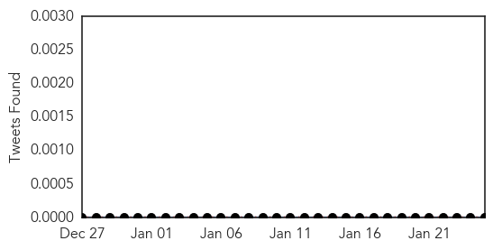
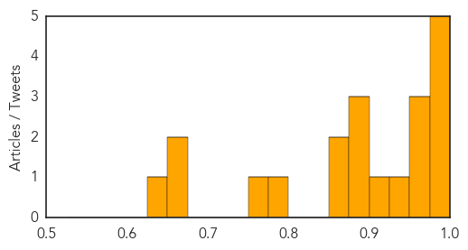

Measles
30-Day Web Trend
30-Day Twitter Trend
0 alerts, 0 warnings

Article Locations
Article Confidences
Top Articles:
- 0.998
- 78 People Now Infected in U.S. Measles Outbreak
- 0.995
- Disneyland Measles Outbreak Reignites Vaccination Debate
- 0.983
- California Battles Several Measles Cases Clustered Around the Disneyland Theme Park
- 0.981
- Not vaccinated? Health officials warn against going to Disneyland
- 0.979
- An Infectious Virus Is Making A Comeback
- 0.973
- Health officials concerned about anti-vaccine trend
- 0.971
- Laguna Beach Kindergarten Vaccination Rates Too low for Herd...
- 0.967
- State’s first case of measles strikes
- 0.934
- Measles Outbreak at Disneyland and Elsewhere Blamed on Foreign Visitors and Anti-Vaccine Movement
- 0.914
- Anti-Vaxxers Ruined Disneyland: Why this Public Health Nightmare Needs to be Stopped
- 0.895
- Measles outbreak centered in California climbs to 78 cases, 7 states
- 0.884
- Disneyland Measles Outbreak Spreads Across Country
- 0.877
- Disneyland measles outbreak leads Edmonton-area family to change holiday plans
- 0.871
- Measles case reported in Sioux Falls
- 0.858
- Second Arizona measles case linked to Disneyland visit confirmed
- 0.798
- City Officials Investigate Possible Measles
- 0.754
- Disneyland measles outbreak leaves many anti-vaccination parents unmoved
- 0.663
- The doctor we can thank for the resurgence of measles
- 0.655
- Disneyland measles outbreak sparks vaccination concerns
- 0.629
- Measles case reported in Sioux Falls; officials host clinic
Top Tweets:
-
No tweets found for Jan 25, 2015
Bubonic Plague
30-Day Web Trend
30-Day Twitter Trend
0 alerts, 0 warnings

Article Locations


Article Confidences

Top Articles:
-
No articles found for Jan 25, 2015
Top Tweets:
-
No tweets found for Jan 25, 2015